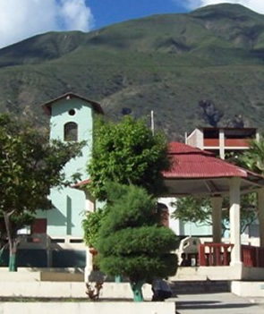

El distrito fue creado por Ley N° 9868 del 28 de diciembre de 1943, en el primer gobierno del Presidente Manuel Prado Ugarteche y diputado por Jaén el señor: Sergio Rodríguez. Se inauguró como distrito el 15 de abril de 1944, instalándose la primera corporación edilicia presidida por el alcalde Fidel Núñez Cervera. Gracias al esfuerzo de los colasayinos y de sus alcaldes, Pomahuaca se ha convertido en un pueblo con opciones turísticas de gran importancia para el futuro.
El origen de Pomahuaca se deriva de dos vocablos Quechuas: POMA que significa Puma y HUACA que significa Adoratorio, en resumen Pomahuaca significa adoratorio del puma. Este distrito estaba ubicado en las faldas del cerro Amilán, cuyo territorio, así como la parte baja del Valle Manta, donde actualmente está ubicado el pueblo, fue una hacienda de propiedad de doña Francisca Vides.
En la época del imperio incaico existía la tribu de los Pakamurosparalelamente existía la tribu los chamaches que en quechua significa tierra fría, ubicado en la misma falda del cerro Amilán este pueblo de Chamache se hizo conocido el 4 de febrero de 1502, cuando fue visitado por el obispo de Quito Fray Pedro de la Peña, quien escribió las ordenanzas para el distrito de Jaén y Huarango.
Pomahuaca distrito ecoturístico por naturaleza muy rico en bosques secos, Pomahuaca se ha convertido en un pueblo con opciones turísticas de gran importancia para el futuro. Pomahuaca hoy en el S.XXI y en el Tercer Milenio, tiene en la actualidad un Centro Poblado, cincuenta caseríos y treinta y ocho anexos, que forman al DISTRITO DE POMAHUACA, PROVINCIA DE JAEN, REGION CAJAMARCA
